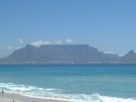
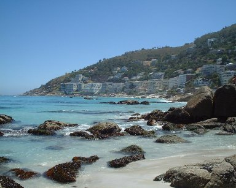

South African Correspondent - James
I always wanted to say "its hell in the colonies" but I would have

been about twenty years too late. The closest I could have got in 1979 when we arrived here was "Its hell in the former colonies" but you must admit it doesn't have the same ring to it. When I say we, I mean me andt missus, Gaynor. Scousers as we all know are very clever and Gaynor is no exception to this rule. She is unlike your average Scouser in one way though, She admits that she was not in The Cavern on the night that The Beatles performed for the very first time. I have yet to meet another Scouser who readily admits to this, the place must be massive. She does however insist that she has stood in the Kop and I occasionally pretend that I believe her to keep the peace or when I want my own way.
Having now established who the "we" is I will now get back to hell and the colonies. It would be easy to tell you about the beautiful beaches of Cape Town and Durban but if you want to know about that then get the buzz to town and annoy a travel agent by pretending you want to go there, I am sure you can get a brochure. I would much rather tell you what it is really like living 8000 miles away

from Hardshaw Street and what the people are like. First the people. South Africa as we know are very good at splitting people into groups and not wishing to try and reinvent the wheel I will do the same. The largest group is of course the indigenous one, the Africans. On the whole, these are very pleasant people who get on with life and try and do the best they can. There is however a section of that group, like other groups who like to indulge in crime and even if they didn't would get the blame anyway. Car hijackings and robbery seem to be the required method of wealth creation of that group and they are fairly successful at it. So successful in fact that the newspapers don't even report it anymore, every one does however know a close friend or colleague who has been hijacked. The African male in general is soccer mad. Talking about and playing soccer is a major social past time. When the riots of 1976 were at there height many in the army and police believed that the best way to stop the fighting would be to throw a football into the crowd and then every one would just get on with a game instead, forget the fighting and go home after ninety minuets. I don't think theory was ever actually tested though.
The next major group are Afrikaans. These are the people that the British Government gave power over too when they pulled out. On the whole they are pleasant enough but have a patriotism which borders on the unhealthy. Nowadays this patriotism is directed at sport. Every one is a rugby and cricket fanatic, young,old,male and female. Should the national side at these sports be beaten they genuinely and sincerely believe that it is the fault of the referee on umpire, The whole loss is due to a major conspiracy that the rest of the World has against them because if all way fair, then they are unbeatable purely due to the fact that they are South African and for no other reason at all. Hansie Cronje's bribe taking was the G7's conspiracy to weaken South African cricket.
The group which is the smallest but as ever has the biggest mouth is of course the immigrants. Around twenty five percent of this group consists of our countryman. I have learned over the years that a large proportion of this group are in fact the kind of people that I left England to get away from, but they cannot always be avoided. These people generally "buy" into the South African way of life and in a attempt to fit in at any cost, will support South Africa against any opposition, including The English. I personally have no time for these people and it is convenient that in general they tend to be scousers. This allows me to kill two birds with one stone. A lot of them belong to Liverpool supporters clubs and meet regulalarly at appropriate venues where they also vent there anger against referees should there team lose, funny that. The rest of us who do remain patriotic are known not too affectionately as Souties. This is a Afrikaans term and implies that you don't really know which country you are living in and have one foot in England and the other in South Africa. Your balls are therefore hanging in the salty sea, clever eh.
James